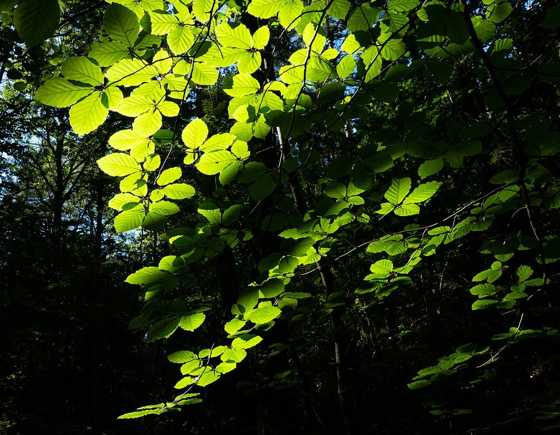
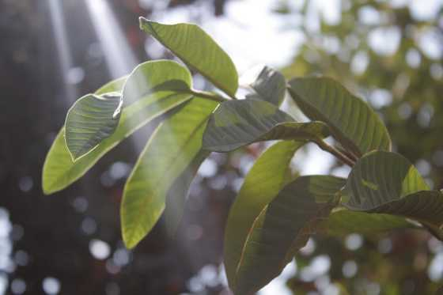
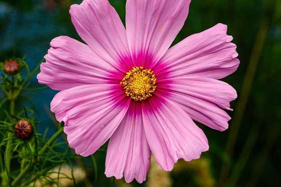
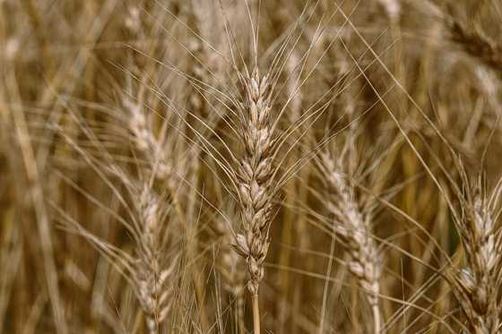
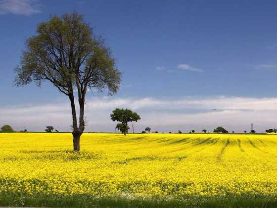
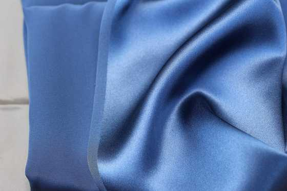
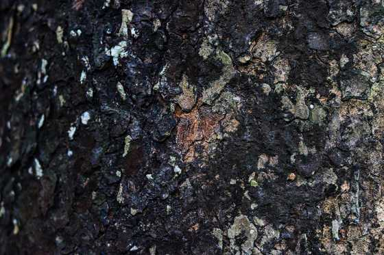
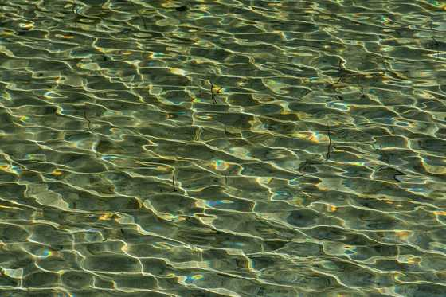
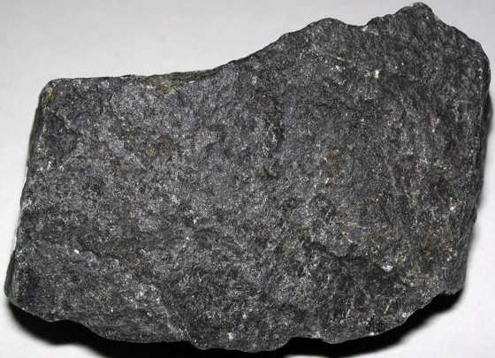
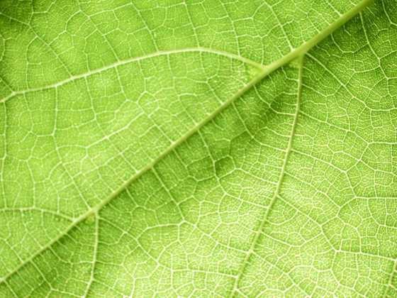

沼田市白沢町のヘアサロン
いつもの髪に、
やわらかな光をひとつ。
ＲＩＣＯ・ＨａｉｒＭａｋｅ
白沢町の暮らしの近くで、髪を整える時間を。ご相談やお問い合わせは、Instagramからどうぞ。
※このキャッチコピーは制作側の案です。
Instagramを見るお電話：準備中

メニュー
MENU
メニューの内容・料金・営業時間・定休日は準備中です。詳細はお店にご確認ください。

ヘアメイク
店名にもあるヘアメイク。内容は準備中です。

ご相談
髪の悩みやご希望は、Instagramからお問い合わせください。

料金・営業時間
準備中



口コミ
VOICE
以下はサイトのイメージを伝えるための創作例で、実際のお客様の声ではありません。
イメージ例
仕事帰りに寄れる距離で助かります。話しやすくて、ついゆっくりしてしまいました。
イメージ例
髪の悩みをていねいに聞いてもらえて、仕上がりも気に入りました。
イメージ例
地元にこういうお店があると心強いです。また整えに行きたいです。
お店について
ABOUT
ＲＩＣＯ・ＨａｉｒＭａｋｅは、群馬県沼田市白沢町上古語父にあるヘアサロンです。Instagramでは「沼田市 RI©︎O Hair Make」の名前で発信されています。
店名の由来やオーナーさまの想いは、公開されている情報から確認できませんでした。そのため、このページでは断定を避け、確認できた事実だけを載せています。
- 所在地：群馬県沼田市白沢町上古語父67-6
- 業態：ヘアサロン(ヘアメイク)
- Instagram：@rico.hairmake
制作側のイメージ：山あいの穏やかな土地で、髪を整えてほっとひと息つく場所。配色は麦畑や夕空のあたたかな色から選びました。

写真クレジット
写真はすべてWikimedia Commonsのフリー素材で、一部縮小・切り抜きの加工をしています。
| leaf-light.jpg | מינוזיג / CC0 / 出典 |
| wheat-ears.jpg | A S M Jobaer / CC BY-SA 4.0 / 出典 |
| apricot-sky.jpg | Thennicke / CC BY-SA 4.0 / 出典 |
| dark-bark.jpg | A S M Jobaer / CC BY-SA 4.0 / 出典 |
| sunlit-leaves.jpg | W.carter / CC0 / 出典 |
| cosmos.jpg | Friedrich Haag / CC BY-SA 4.0 / 出典 |
| water-light.jpg | Uoaei1 / CC BY-SA 4.0 / 出典 |
| yellow-field.jpg | jacilluch / CC BY-SA 2.0 / 出典 |
| dark-stone.jpg | James St. John / CC BY 2.0 / 出典 |
| leaf-veins.jpg | 不明(パブリックドメイン) / Public domain / 出典 |
| calm-water.jpg | kallerna / CC BY-SA 4.0 / 出典 |
| soft-cloth.jpg | Enby / CC BY-SA 4.0 / 出典 |


